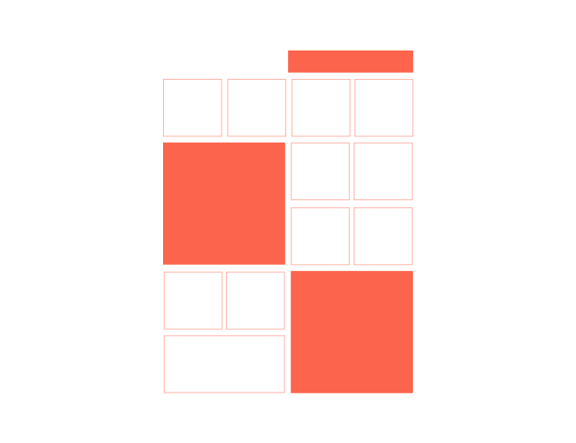

The Navgroup is a flexible, powerful component for creating navigation base around the big screen experience. You can quickly build simply to complex navigations that have been design to work with the cwc controller components.

HTML markup
To set up an Navgroup add a data-cwc-navgroup attribute to define the container. To then add a series of child elements, add data-cwc-navitem to each element you make a wild of that Navgroup/
1
2
3
4
5
<ul class="search" data-cwc-navgroup="search" >
<li data-cwc-navitem >Item .01</li>
<li data-cwc-navitem >Item .02</li>
<li data-cwc-navitem >Item .03</li>
</ul>
JavaScript Declaration
active_group_class and active_group_item can be set when initiating the Navgroup component.
1
2
3
4
5
6
7
8
9
10
window.onload = function() {
/*------------------------------------------------------
* @object - CWC Main Navgroup Object
* @info - initiate CWC Navgroup Object
*/
Navgroup = new cwc.Navgroup({
active_group_class : 'custom_class_name', // `cwc-selected-group` by default
active_item_class : 'custom_class_name', // `cwc-selected-item` by default
});
};
The
cwc.Navigation({})has to be initiated after the DOM has finished loading.
Instructions
Instructions allow you to bind different events to either the data-cwc-navgroup or data-cwc-navitem, this can be achived by applying the data-cwc-instructions attribute to its html markup.
| Instructions | Type | Navgroup | Navitem | Description |
|---|---|---|---|---|
| history-item | Boolean | ✔ | Remembers the last active item in Navgruop to switch to. | |
| start-here | Boolean | ✔ | The starting point of your application. | |
| on-entrance | Hook | ✔ | ✔ | Used ‘hook methods’ to add callback for when a Navgruop becomes active. |
| up | Action | ✔ | ✔ | Events keyboard keys (↑ & W), pass and Action as an argument. |
| right | Action | ✔ | ✔ | Events keyboard keys (→ & D), pass and Action as an argument. |
| down | Action | ✔ | ✔ | Events keyboard keys (↓ & S), pass and Action as an argument. |
| left | Action | ✔ | ✔ | Events keyboard keys (→ & A), pass and Action as an argument. |
| enter | Action | ✔ | ✔ | Events keyboard keys (↵) , pass and Action as an argument. |
data-cwc-instructionsmust be given in JSON format with each one of the keys-value pairs describe below. Navitem instructions take priority over Navgroup instructions allowing from more complex UI to be created.
Actions
Actions allow you to move to other Navgroups and Navitems within the DOM. Hooks can also be included to allow for more customisation.
| Action (value) | Description |
|---|---|
| ng:next | More to the next Navgroup group |
| ng:prev | More to the previous Navgroup group |
| ng:(name) | Prefixing ng: followed by the Navgroup name you wish to target. |
| ni:next | Select the next tem inside the given Navgroup. |
| ni:prev | Select the previous item inside the given Navgroup. |
| hook: | Prefixing ‘hook:’ will invoke a hooks |
| c-hook: | Prefixing ‘c-hook:’ will invoke a hook defined on the controller application |
Navgroup instruction example
1
data-cwc-instructions='{ "history-item" : "true", "left" : "ng:name-of-navgroup", "up" : "ni-next" }'
Navitem instruction example
1
data-cwc-instructions='{ "starting-point" : "true", "right" : "ng:name-of-navgroup", "onitementrance" : "c-hook:controler-hook-name" }'
Navgroup & Navitems Hooks
Callback hook for when the Navgroup or Navitem has changed.
| Hook | Description |
|---|---|
| navgroup-updated | Callback method for when a navigation has moved to a new index. tracking object returned. |
| navitem-updated | Callback method for when an item has moved to a new index. tracking object returned. |
1
2
3
4
5
6
7
8
9
10
11
/* -- On navgroup update -- */
Hooks.set_hook( {
hook_name : 'cwc:navgroup-updated',
method : function( tracking ) { tracking }
} );
/* -- On item update -- */
Hooks.set_hook( {
hook_name : 'cwc:navitem-updated',
method : function( tracking ) { tracking }
} );
Tracking object
When either the cwc:navgroup-updated or cwc:navitem-updated has been set, the information returned back to the hook is outlined in the table below.
| Keys | Description |
|---|---|
| g_id | The id of the active navigation group |
| g_name | The name of the active navigation group |
| g_elm | The html element of the active navigation group |
| i_id | The id of the active item in a navigation group |
| i_elm | The html element of the active item in a navigation group |
Events
The navigation can also be controlled via JavaScript by calling the call_action method on the cwc.Navigation() object.
1
2
3
4
5
6
7
/* -- Navigation events -- */
Navigation.call_action('up', function( tracking ){ /* -- Logic here -- */ });
Navigation.call_action('right', function( tracking ){ /* -- Logic here -- */ });
Navigation.call_action(’S’, function( tracking ){ /* -- Logic here -- */ });
Navigation.call_action(‘SW’, function( tracking ){ /* -- Logic here -- */ });
Navigation.call_action('left', function( tracking ){ /* -- Logic here -- */ });
Navigation.call_action('enter', function( tracking ){ /* -- Logic here -- */ });
Adding and removing items
Not every website is static and new HTML elements make their way into the page after the DOM has loaded. The ng_append_item() and ng_remove_item() methods have been designed to allow for new elements to be added to a Navgroup.
1
2
3
4
5
6
7
8
9
10
11
12
/* -- get elm in the DOM -- */
var new_item = document.getElementById("new-item");
/* -- add the new item toa navigation group -- */
navigation.ng_append_item(
new_item , 'ng:name'
);
/* -- Remove the new item toa navigation group -- */
navigation.ng_remove_item(
new_item , 'ng:name'
);
Code snippets
Example of the type of HTML markup that is required in order to build a navigation.
1
2
3
4
5
6
7
8
9
10
11
12
13
14
15
16
17
18
19
20
21
22
<div data-cwc-navgroup="global-nav"
data-cwc-instructions='{ "down" : "ng:prev" , "left" : "ng:global-nav", "up" : "ni:next" }' >
<div data-cwc-navitem > 01. Item one </div>
<div data-cwc-navitem > 02. Item two</div>
<div data-cwc-navitem > 03. Item three</div>
<div data-cwc-navitem > 03. Item four</div>
</div>
<nav data-cwc-navgroup="global-nav" data-cwc-instructions="{ "left" : "ni:prev" , "down" : "ng:pre", "right" : "ni:next", "history-item" : "ture" }" >
<div data-cwc-navitem
data-cwc-instructions ='{"up" : "ng:search"' >
01. Item one </div>
<div data-cwc-navitem
data-cwc-instructions ='{"up" : "ng:search"' >
02. Item two </div>
<div data-cwc-navitem >
03. Item three
</div>
<div data-cwc-navitem
data-cwc-instructions ='{"up" : "ng:search", "on-entrance" : "hook:on-enter" }' >
04. Item four
</div>
</nav>
Here hopping to roll out some template to help you kick off your second screen application.